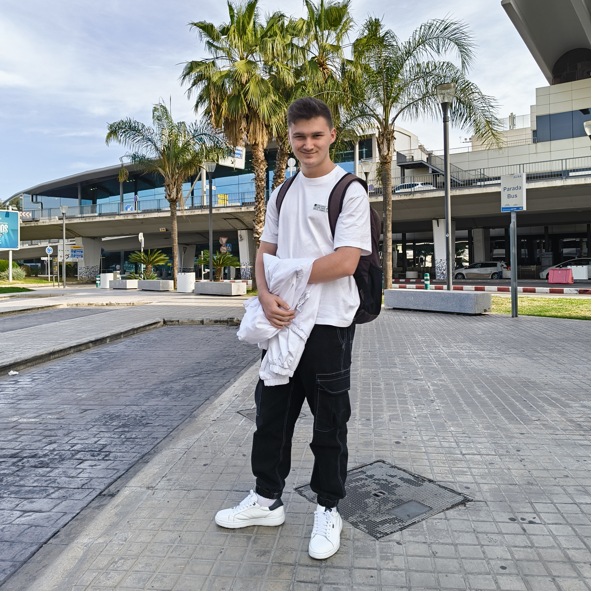

Currículum Vitae

Información personal
- Nombre: Dennis Adalbert Boghean
- Fecha de nacimiento: 12 de mayo de 2005
- Email: bogheanadalbertd@gmail.com
- Teléfono 672849980
Experiencia Laboral
- Erasmus Malta: Oficinas de administración de fondos Europeos Becario, Mayo 2024
Reparación de equipos de oficina
Testeo de la página web del gobierno
- Ayuntamiento de Favara Becario, Marzo - Abril 2024
Soporte técnico de oficina
Estudios
- Grado Superior en Dessarrollo de Aplicaciones Multiplataforma --- IES Jaume II El Just, Cursando Actualmente.
- Grado Medio en Sistemas Microinformáticos y Redes --- IES Blasco Ibañez de Cullera 2022-2024
- Educación Secundaria Obligatoria --- Escolapios Gandia
Habilidades
- Montaje de ordenadores
- Instalación de programas
- Administración de redes
- HTML y CSS
Idiomas
- Castellano:Nativo
- Valenciano: Nativo
- Inglés: Avanzado C1
- Rumano:Heredado